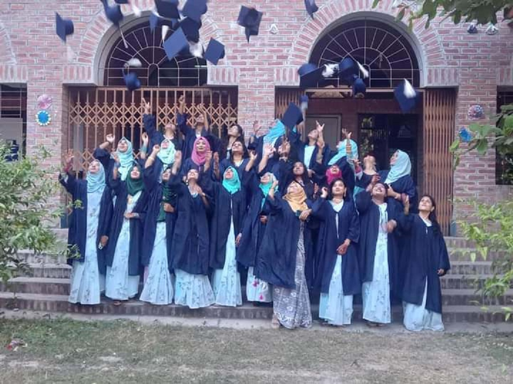
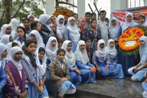

.png)

Architecture and Interior Design
At Rajshahi Mahila Polytechnic Institute, run under the Bangladesh Board of Technical Education, Architecture and Interior Design Technology has been in place since its inception. Judging by the results of this technology test and overall activities, this institute has already gained a good reputation. Apart from studies, these technology students participate in various cultural and social events. Architecture and Interior Design Technology has digital Auto CAD Lad and two Drafting Labs in Multimedia Class room where all the students are taught by real hands.
4 years “Diploma-in-Engineering Course” :
At present 4 years diploma-in-engineering education program is being conducted in Architecture and Interior Design Technology.
This four-year education course consists of a total of eight semesters including an “Industrial Attachment Training” of one semester of six months duration to be completed in various establishments. According to the rules of Bangladesh Technical Education Institute, after completing this course of eight semesters with industrial training, he is awarded the "Diploma-in-Engineering" certificate of a specific technology. After passing diploma-in-engineering there are opportunities to take up prestigious jobs or trades of choice. The academic recognition of the diploma course is external so a diploma engineer gets the opportunity to work abroad as a middle class engineer rather than a general labourer.

Objectives:
- Increasing technical education rate and building skilled manpower.
- Human resource development.
- To play a leading role in the consulting firm and housing sector of the country through architecture and interior design.
- Economic development, prosperity and elimination of unemployment.
- To play a role in eliminating unemployment in the society as well as the country by becoming entrepreneurs with technical education.
Purpose:
To position diploma graduates in competitive domestic and international job markets through quality education.Diploma-in-engineering students from this technology get higher education opportunities in various public and private universities and associate member (AMIE) under IEB.
Achievements and Achievements:
- Acquiring the recognition of the 2nd best institute in 2015 at the national level among the 49 government polytechnics.
- The girls of Atra Technology exhibited their paper furniture project at the national level skill competition in 2014.
- Tree Planting has been done in their department with abandoned bottles.
- In 2016, the girls of Atra Technology won the debate competition held on World Environment Day.
- In 2017, this technology provided leadership on International Women's Day.
- Also plays a leading role in celebrating the Boishakhi fair.

Libraries and IT Centres:
The institute has a library of up-to-date text and reference materials.
Texts and reference books along with current technology and educational support journals can be used by teachers, officers and staff including students. Around 50 people can sit and read here at a time. Currently the collection number of this library is about 4650. In 2023, Bangabandhu Corner (collection number around 500) was established here.
The institute has an IT center to keep up with the latest information technology and make the students proficient in information technology. The center is equipped with all modern communication technologies including internet and e-mail and has recently been connected with BTCL's fiber optic connection.
The institute has an Audio-Visual Lab with state-of-the-art Audio-Visual equipment. Multimedia Projector, Over Head Projector,
This lab with video camera, tape recorder, record player etc.
Number of Seats:
In 2016, the number of new seats was increased in order to build skilled manpower. Currently we have two shifts running. Now 60 students are admitted in each shift. First shift class starts at 8:00 AM and ends at 1:15 PM. The second shift starts at 1:30 and ends at 6:45.
Four Year Diploma in Engineering Course:
Technology 1st Shift and 2nd Shift Number of Seats (Both Shifts)
Architecture and Interior Design Technology 50, 50, (total- 100) people
Results:
Architecture and interior design technology is getting better results every year. This technology has earned a reputation for overall efficiency with test results superior to any other technology. These technology girls achieve merit list of Bangladesh Technical Education Board every year. Last year final result-
| Year | Pass rate | Maximum C.G.P.A |
|---|---|---|
| 2020 | 100% | 3.92 |
| 2019 | 97% | 3.98 |
| 2018 | 98.29% | 3.88 |
| 2017 | 98% | 3.92 |
| 2016 | 97% | 3.82 |
| 2015 | 100% | 3.89 |
Higher Education Opportunities:
After passing the diploma, there is an opportunity to become an E. JHP engineer through the 2-year A. G. O. U. examination in addition to the opportunity to study E. JHP in related subjects in Dhaka University of Engineering and Technology and various private universities. One year Diploma in Technical Education course can be done in Technical Teacher Training College. Also Diploma Engineers can pursue degree in side courses under National University. Diploma engineers have plenty of opportunities for higher education outside the country.
Workplace:
After passing diploma-in-engineering there are opportunities to take up prestigious jobs or trades of choice. The academic recognition of the diploma course is external so a diploma engineer gets the opportunity to work abroad as a middle class engineer rather than a general labourer. There is an opportunity to join the service initially as 2nd Class Gazetted Officer and get promoted to 1st Class Gazetted Officer. At present Diploma Engineers in Bangladesh are employed in Water Development Board, Power Development Board, T&T, Television, Radio, Atomic Energy Commission, Meteorological Department, Technical subject teachers in Vocational Schools and Colleges and other jobs including teachers in various engineering educational institutions, City Corporations, Municipalities, Job opportunities have been created in various public and private institutions including Shipping Corporation, Biman, Bangladesh Road Transport Authority, modern public and private hospitals.